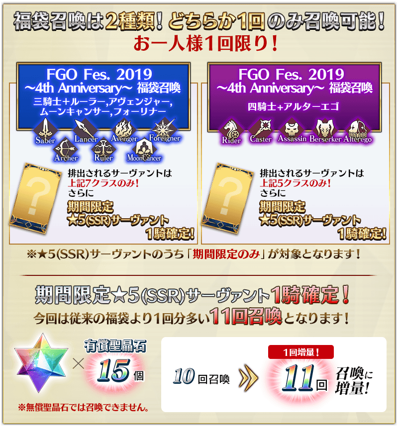
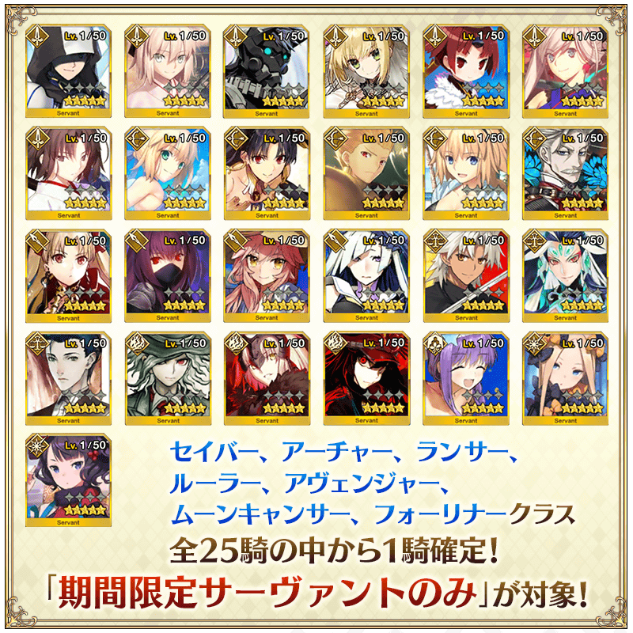
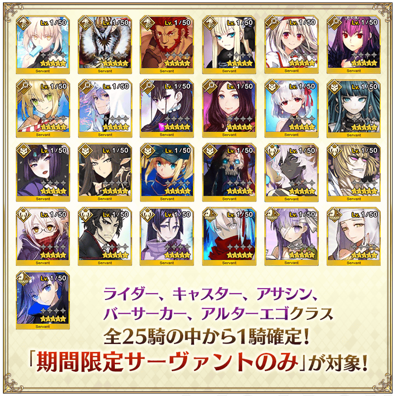

◆「FGO Fes. 2019 ～4th Anniversary～ 福袋召喚」期間◆
期間:2019年8月4日(日) 18:00～8月18日(日) 11:59
舉辦期間限定「FGO Fes. 2019 ～4th Anniversary～ 福袋召喚」！

詳情請在聖晶石召喚畫面左下的召喚詳細確認。
◆有關聖晶石的注意◆
※能用有償聖晶石15個召喚。無法用無償聖晶石召喚。
※聖晶石購入時給予的「附贈(オマケ)」是做為無償聖晶石而不包含在有償聖晶石的個數，請注意別搞錯。還有，持有聖晶石的詳細，可從持有道具一覧確認。
◆有關從者的注意◆
※請注意「★5(SSR)李奧納多・達文西(Rider)是抽出對象外。
※「FGO Fes. 2019 ～4th Anniversary～ 福袋召喚 三騎士＋Ruler,Avenger,MoonCancer,Foreigner」中會被抽出從者的職階為Saber、Archer、Lancer、Ruler、Avenger、MoonCancer、Foreigner，其他的職階不會被抽出。
※「FGO Fes. 2019 ～4th Anniversary～ 福袋召喚 四騎士+Alterego」中會被抽出從者的職階為Rider、Caster、Assassin、Berserker、Alterego，其他的職階不會被抽出。
※會從「FGO Fes. 2019 ～4th Anniversary～ 福袋召喚」抽出的★5(SSR)從者只限在2019年7月前登場的期間限定從者對象，會從故事召喚被抽出的★5(SSR)從者不會被抽出。
※在召喚對象確定1位★5(SSR)從者以外，也包含一部份的★4(SR)、★3(R)從者及概念禮裝。
※透過章節進行追加的★4(SR)以下從者，就算未通過章節前也能入手。
※★請注意4(SR)以下的期間限定從者為抽出對象外。
※關於隱藏真名尚未判明的從者，透過主線關卡的進行會讓從者及一部份份寶具的名稱變化。
◆有關從者真名的注意◆
在2018年12月31日(二) 23:00以後新配信的主線故事及期間限定活動、一部份關卡、宣傳活動及召喚中，會顯示隱藏真名的對象從者真名。
※已經配信的主線故事、復刻活動、一部份關卡中不在此限。
◆有關概念禮裝的注意◆
※期間限定概念禮裝的「★5(SSR)ウォーク・イン・ザ・パーク」「★4(SR)モーニング・グローリー」「★3(R)サンデー・ディナー」也會登場。
※請注意做為抽出對象期間限定概念禮裝只限「★5(SSR)ウォーク・イン・ザ・パーク」「★4(SR)モーニング・グローリー」「★3(R)サンデー・ディナー」，其他的期間限定概念禮裝為抽出對象外。
※「★3(R)サンデー・ディナー」在Pick Up期間中，也能靠友情點數召喚獲得。
※請注意自友情點數召喚抽出的「★3(R)サンデー・ディナー」在自動變還設定登錄★3(R)概念禮裝的情況，會變成自動變還的對象。
確定1位期間限定★5(SSR)從者、確定1張★4(SR)以上、確定1位★3(R)以上的從者！ ※確定★4(SR)以上包含從者和概念禮裝。
◆「FGO Fes. 2019 ～4th Anniversary～ 福袋召喚 三騎士＋Ruler,Avenger,MoonCancer,Foreigner」對象★5(SSR)從者◆

| 職階 | 稀有度 | 從者名 |
|---|---|---|
| Saber | ★★★★★ | 亞瑟・潘德拉剛〔Prototype〕 |
| ★★★★★ | 沖田總司 | |
| ★★★★★ | 西格魯德 | |
| ★★★★★ | 尼祿・克勞狄烏斯〔Bride〕 | |
| ★★★★★ | 紅閻魔 | |
| ★★★★★ | 宮本武藏 | |
| ★★★★★ | 兩儀式 | |
| Archer | ★★★★★ | 阿爾托莉亞・潘德拉剛 |
| ★★★★★ | 伊絲塔 | |
| ★★★★★ | 吉爾伽美什 | |
| ★★★★★ | 貞德 | |
| ★★★★★ | 新宿的Archer(詹姆斯・莫里亞蒂) | |
| Lancer | ★★★★★ | 艾蕾修卡 |
| ★★★★★ | 斯卡哈 | |
| ★★★★★ | 玉藻前 | |
| ★★★★★ | 布倫希爾德 | |
| Ruler | ★★★★★ | 天草四郎 |
| ★★★★★ | 始皇帝 | |
| ★★★★★ | 夏洛克・福爾摩斯 | |
| Avenger | ★★★★★ | 巖窟王 |
| ★★★★★ | 貞德〔Alter〕 | |
| ★★★★★ | 魔王信長(織田信長) | |
| MoonCancer | ★★★★★ | BB |
| Foreigner | ★★★★★ | 阿比蓋爾・威廉斯 |
| ★★★★★ | 葛飾北齋 |
※「★5(SSR)織田信長」靈基再臨到第3階段的話名稱會變成「★5(SSR)魔王信長」。 ※「FGO Fes. 2019 ～4th Anniversary～ 福袋召喚 三騎士＋Ruler,Avenger,MoonCancer,Foreigner」中會被抽出從者的職階為Saber、Archer、Lancer、Ruler、Avenger、MoonCancer、Foreigner，其他的職階不會被抽出。 ※透過章節進行追加的★4(SR)以下從者，就算未通過章節前也能入手。
◆「FGO Fes. 2019 ～4th Anniversary～ 福袋召喚 四騎士+Alterego」對象★5(SSR)從者◆

| 職階 | 稀有度 | 從者名 |
|---|---|---|
| Rider | ★★★★★ | 阿爾托莉亞・潘德拉剛〔Alter〕 |
| ★★★★★ | 伊凡雷帝 | |
| ★★★★★ | 伊斯坎達爾 | |
| ★★★★★ | 司馬懿〔萊涅絲〕 | |
| Caster | ★★★★★ | 伊莉雅絲菲爾・馮・愛因茲貝倫 |
| ★★★★★ | 斯卡哈＝斯卡蒂 | |
| ★★★★★ | 尼祿・克勞狄烏斯 | |
| ★★★★★ | 梅林 | |
| ★★★★★ | 紫式部 | |
| ★★★★★ | 李奧納多・達文西 | |
| Assassin | ★★★★★ | 伽摩 |
| ★★★★★ | 克麗奧佩脫拉 | |
| ★★★★★ | 酒吞童子 | |
| ★★★★★ | 賽米拉米斯 | |
| ★★★★★ | 謎之女主角X | |
| ★★★★★ | “山之翁” | |
| Berserker | ★★★★★ | 阿周那〔Alter〕 |
| ★★★★★ | 坂田金時 | |
| ★★★★★ | 謎之女主角X〔Alter〕 | |
| ★★★★★ | 土方歲三 | |
| ★★★★★ | 源賴光 | |
| Alterego | ★★★★★ | 沖田總司〔Alter〕 |
| ★★★★★ | 帝王花 | |
| ★★★★★ | 殺生院祈荒 | |
| ★★★★★ | Meltryllis |
※「FGO Fes. 2019 ～4th Anniversary～ 福袋召喚 四騎士+Alterego」中會被抽出從者的職階為Rider、Caster、Assassin、Berserker、Alterego，其他的職階不會被抽出。 ※透過章節進行追加的★4(SR)以下從者，就算未通過章節前也能入手。
其他還有，「Fate/Grand Order Fes. 2019 ～4th Anniversary～」和期間限定「FGO Fes. 2019 ～4th Anniversary～ Lostbelt＆亞種特異點Pick Up召喚(每日交替)」同時舉辦！
關於詳情，請自下述橫幅確認。
■「Fate/Grand Order Fes. 2019 ～4th Anniversary～」詳細情報

■「FGO Fes. 2019 ～4th Anniversary～ Lostbelt＆亞種特異點Pick Up召喚(每日交替)」詳細情報